REVIEWS
Sabdartha Kalpataruvu (Samskrit-Samskrit,
Telugu Dictionary) by Mamidi Venkataryulu. Edited by Sri Suddha Chaitanya
Swami. Published by Sri Vasavi Grantha Prachurana Samiti, Masulipatam. Demy
8-vo size. Pages 1645. Price Rs. 20.
Sri
Mamidi Venkatarya, the author of this dictionary “Sabdartha Kalpataruvu”, a
Vaisya by caste, and scholar in Samskrit and Telugu, lived and wrote between
1764–1834 A.D., and hence was even earlier than the authors of “Sabda
Kalpadruma” and “Vachaspatyam”, the encyclopaedic dictionaries in Samskrit,
wherein words are arranged according to the alphabetical order. It was this
Venkatarya who, for the first time, conceived of the idea of such a dictionary
as this, that is comprehensive and concise at the same time, set himself to its
writing and completed it. This dictionary was referred to by Brown also in his
dictionary, and he offered unstinted praise to it. But owing to want of funds,
this work could not see the light of day. The credit of bringing out this
valuable work goes to Vasavi Grantha Prachurana Samiti, the Publishers, and Sri
Suddha Chaitanya Swamiji, the Editor, who have laid the Samskrit-knowing public
under a deep debt of gratitude to them by this publication of theirs.
This
dictionary gives meanings for about 80,000 Samskrit words culled from all
varieties of Samskrit literature including Sastras. The author arranged the
words according to their final letter, but the editor has changed the order and
arranged them according to the initial letters also, without at the same time
changing the original order. The editor, in addition to the Samskrit meanings
in the author’s original, incorporated Telugu meanings also in this edition.
The words are printed not only in Devanagari script but also in Telugu script.
While giving Telugu meanings to popular words like Siva, the editor gave pure
Telugu synonyms also. Thus the dictionary in its present form is useful not
only to Andhras but to all Samskrit students; and we are confident it will have
a good reception and wide circulation throughout India. We are, however,
tempted to offer a few suggestions, consideration of which, we believe, will
enhance the usefulness of the work.
1. Present-day
students and scholars alike who have become accustomed to refer to modern dictionaries
in English and other Indian languages, wherein words are arranged in
alphabetical order, will feel it highly difficult to pick up the required word
in this set-up. No doubt, this arrangement is a bit helpful to poets and
poetasters, who ransack dictionaries for the proper word for their purposes,
but such readers are very few and it is not worth while sacrificing the ease in
the alphabetical order of words in the modern dictionaries for the sake of
these few. It is better to arrange the words in the alphabetical order, at
least in the second edition.
2. More information
regarding Dhatus or root-words is desirable. The conjugation to which the root
belongs, whether it is a set or unit, transitive or intransitive, Atmanepada or
Parasmaipada–all this information is necessary for students of Samskrit.
3. As it is, the order
of some words does not appear to be scientific. The word  (uttarahi), for instance, is given under the word
(uttarahi), for instance, is given under the word  (uttamahah) is formed
by adding the suffix 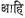 to
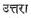by the Paninian rules 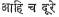and 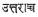and it is in no way related to 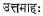. No student will search for the word 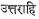 under
(uttamahah) is formed
by adding the suffix 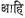 to
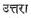by the Paninian rules 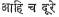and 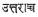and it is in no way related to 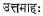. No student will search for the word 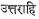 under  . There are many words like these, and they need separate and
individual places for themselves.
. There are many words like these, and they need separate and
individual places for themselves.
4. There is an unusual
feature in this dictionary. Proper names of national and religious leaders and
scholars like Sri Nehru, Patel, Potti Sri Ramulu, Vivekananda and Ramakrishna
find a place in this dictionary. Samskrit verses eulogising them with Telugu
meanings thereof, follow those words. We fear, a directory, and not a
dictionary, is the proper place for such writings.
5. If possible it is
advisable to show the analysis of nouns into Prakriti and Pratyaya, and give
the Krit and Taddhita suffixes.
However,
these and similar other few omissions and commissions do not detract from the
value of the work and its merits. Lapses are sure to creep-in in any work of
this size and nature, however vigilant and careful the editors may be. The work
is the first of its kind in the field and is sufficient to cater to the needs
of a vast majority of readers, and we unhesitatingly commend it to the public.
–B. KUTUMBA RAO
Thus Have I Heard by
the late B. P. Wadia, published by The Institute of World Culture, Bangalore.
Pages 417. Price Rs. 10.
“Thus
Have I Heard” is the title which the late Sri B. P. Wadia, the well-known
theosophist, chose for a series of essays of his which appeared in the Aryan
Path. In these essays we find his reflections on the many social problems
and the perplexities of the world situation in modern times. All these he sees
steadily in the light of the (eternal) wisdom which he served all his life in
its modern expression in Theosophy. He lays no claim to a new wisdom but
reminds his readers earnestly of the self-resolve and self-discipline which
bring a man to the well-recognised state of a Sravaka, a listener, to whose
intent ear, life itself, which has a subtle voice, silently communicates its
song.
The
prime object of these essays is to repeat for the modern era the great truths of
ancient wisdom, to awaken in the reader a correct appreciation of the hoary
past of human civilisation so that an intelligent adaptation of some of the old
truths to modern life and conditions may be attempted.
The
Indian Institute of World Culture was of his founding and nursing even as the Aryan
Path. In this publication, in a book form, of the articles published in the
journal at different times and on different occasions but with one steady
purpose and on essentially one theme, the Institute pays a loving tribute to
its founder, justifies its objective of contributing to the promotion of one
world culture and, at the same time, renders a valuable service to all earnest
souls in search of light and guidance in the face of the many perplexing
problems with which humanity is faced at present.
The
essays are conveniently grouped in this publication, under distinct heads, so
that those dealing with the same or allied topics might be studied together.
Altogether a very valuable publication of very instructive material to earnest
and thoughtful readers.
Science and Spirit by
S. V. Ramamurty, published by the Author, Greams Road, Madras-6. Demy 8-vo
size. Pages 140. Price Rs. 7.50.
The
people and the Governments of Independent Bharat are engaged just at present in
a gigantic effort to industrialise and modernise the economic and social system
in the country, after the model of the leading nations of the West, in Europe
and America. But, in spite of their phenomenal achievements in science,
technology, material prosperity and high standards of living for the people,
even according to the leaders of European thought, life in Europe has ended in
a blind alley; science is destroying more than it is creating, power is
outrunning morality. Europe is looking wistfully across to Asia, with her hoary
ancient civilisation, for lessons in the way of a balanced and fruitful life.
Though
we are still at the outset of our programmes for industrialisation and
modernisation, leaders in India too have already begun to feel that while
science is good, it has been swamping our old values which are also good and
which have shaped our thought and action for several millennia. The recognition
is growing of our urgent need to reconcile our old spiritual values with
science and to attempt an integration of the values of the mind and spirit with
the values of science so important for the physical well-being of man.
Even
with the little progress already achieved in science and technology and the
physical well-being of the people, the need for such a reconciliation is felt
by all our leaders. The power of man has been growing, but his character has
been deteriorating. While the physical well-being of man is progressing, his
moral character is going down. The moral code of the people has been rapidly
breaking down. The old moorings of the spirit have been weakened.
In
the planning and development of India, practical religion is as needful to
build from human resources as reinforced concrete to build from natural
resources. Cultural reconstruction in the shape of concrete religion is thus a
practical need of India. The search for spiritual values, the pursuit of them,
and the reconciliation of them with modern science is thus of great importance
to the progress of India as well as the future of human civilisation.
Such a reconciliation is attempted in this slim volume by one of the most distinguished citizens of modern India, one well qualified and equipped to make the attempt. Steeped in the spirit of Indian thought by virtue of his racial inheritance which affirms the unity of life and the universe, Sir S. V. Ramamurty is at the same time familiar with the latest advances in science, especially in Mathematics and Physics. The articles published in this book give us his reflections on the many problems which are now agitating the minds of serious students of science, philosophy and religion all over the world. Part I of the book deals with the reconciliation of science and spirit at a fundamental level. Part II deals, with particular reference to the current situation in India, and in the light of the deeper vision of the spirit, with the various aspects of reconstruction such as education, ethical conduct, social set-up, rural economics, political ideology and cultural revival.
It
is hoped that the growing realisation of the importance of spiritual values for
the integration of man’s life, social harmony and international peace may be
helped, considerably by this record of the profound reflections and original
suggestions of the learned author.
The
author sees no conflict between science and religion. According to him their
difference is in object, and not in technique or area of operation. They are
not enemies. They are rivals, competitors. They have to co-operate
with each other in fighting their common enemy, the forces of inertia and
intolerance.
The
lines of thought and study indicated in the philosophical essays of Part I and
the practical measures for improvement and reconstruction suggested in the
essays in Part II, are all so refreshingly original and eminently practical and
reveal such a genuine spirit of patriotism and true culture that the volume
deserves the careful and respectful attention of all classes of citizens,
students and scholars, politicians and administrators, as well as the general
cultured public.
–M.
S. K.
Abhijnana Sakuntalamu (Telugu
translation) by Gurramu Venkata Subrahmanyamu, Nellore. Demy 8-vo. size. Pages
44+105. Price Rs. 2.
It is said that there
are nearly thirty Telugu translations of Kalidasa’s “Abhijnana Sakuntalamu”,
and this is a further addition to that number. Translation, indeed, is a tough
job, in that the translator has no scope to allow a full and free play to his
own fancy and imagination. On the other hand, he has to press into service all
the command over language, and metrical skill he has, and bring out
successfully, in his translation, the depth of the poetic imagination,
significance of words, the scintillating subtleties and niceties of different
shades of the meanings of the various expressions found in the original work,
avoiding, at the same time, creating an impression upon the mind of the reader
that he is, after all, reading a translation. Much more so is the difficulty in
the case of a drama, because the language used therein must be such that it is
easily understandable to the audience, if it is to be a stage-worthy drama.
Bearing these difficulties of a translator in mind, we may say that the present
translator has succeeded in his attempts to a considerable extent. It is too
much to expect of him to bring out in his translation all the different
meanings relevant or irrelevant that the sentence 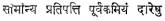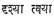 is held
to express. Perhaps owing to metrical exigencies the translator has to leave
off the word 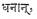 in the
compound 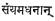 though
that single word has its own significance in the original; but in some places
he has added some words which convey the poet’s intention more clearly. The
following verses for example bring out explicitly the sense of the verses in
the original:
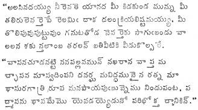
It may be noted here
that the word the word 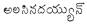for which there is no warrant in the text of the
original serves the purpose of a commentary to the original. The word 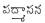 in
the second verse cannot convey all that the word 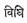 in
the original implies. But a few such trivial lapses as these do not detract
from the merit of the translation which, on the whole, is excellently done. As
regards the language, it is not as easy as may be expected, but is easier than
the language found in most of the other translations, excepting perhaps only
that of the late Sri K. Veeresalingam Pantulu.
This
translation contains a brief but scholarly introduction by Sri Siva Sankara
Swami, who points out therein a few salient and striking features of the drama
and merits of the translation. His comparision of Abhijnana Sakuntalam with
Prabodha Chandrodaya and Sankalpa Suryodaya, however, needs more
explanation to enable the reader to understand the point therein. We commend
the translation to the Telugu public.
–B.
KUTUMBA RAO